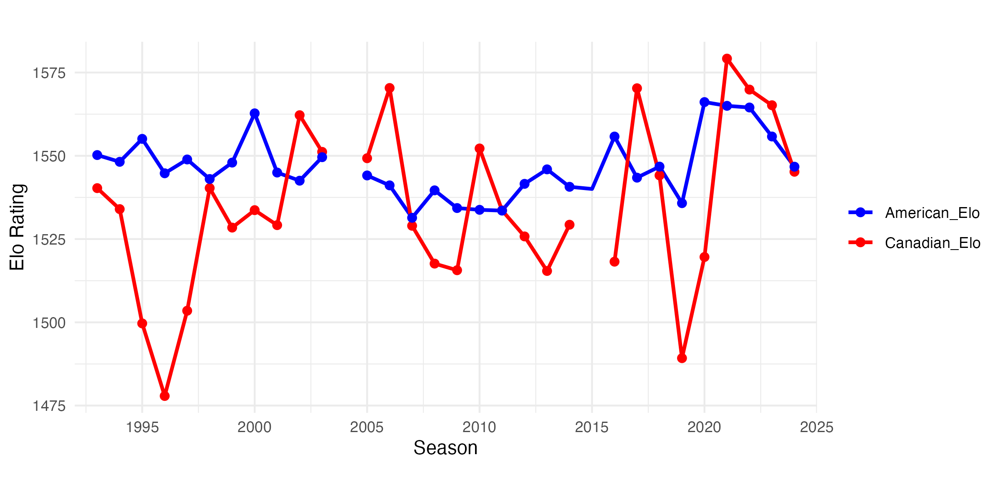

Canada's Stanley Cup Drought
Every sports fan knows that hockey reigns supreme in Canada. Recent polls have found that 40% of Canadians are active NHL fans while 70% follow to some extent. Between 1927, the first year the Stanley Cup was awarded exclusively to an NHL team, and 1993, Canadian teams won 41 of the 67 (61.2%) Stanley Cup Final despite never comprising more than half the league. While 20 of these championships came during the “Original Six” era from 1942-1967, Canadian teams still combined to win 16 of 26 (61.5%) championships between 1968 and 1993 despite never comprising more than one-third of the league.
Since the Montreal Canadiens won the 1993 Stanley Cup, Canadian teams have failed to bring home a single championship in 31 attempts, including going 0-for-8 in finals appearances. This hasn’t been due to a lack of Canadian teams in the league. At its lowest point from 2001-2011, Canada was home to 20% (6 of 30) of NHL teams. This begs the question: Have Canadian teams been historically poor or historically unlucky during this stretch?
The NHL playoffs have included 16 teams in each of the 31 seasons during Canada’s drought. Of the 496 berths, Canada has accounted for 102 (20.56%) of these playoff spots, a rate slightly lower than the proportion of teams they have in the league. The playoff berths have been quite balanced. In 22 of 31 seasons, they sent 3 or 4 teams to the playoffs. Four times (2003-04, 2014-15, 2016-17, and 2024-25), 5 Canadian teams qualified for the playoffs, while the country hit its low point in the 2015-16 season when all 7 teams sat at home.
Moreover, Canadian playoff teams have been weaker than their American counterparts. The 394 playoff teams from the United States had an average Elo rating of 1546.30 – over 11 points higher than the 102 Canadian teams’ average of 1534.79. In only 10 seasons did the Canadian teams have an average Elo rating higher than those from the U.S. However, three of those seasons (2010-11, 2011-12, and 2017-18) resulted from Canada only sending 2 strong teams to the playoffs. Canada’s weak teams are further reflected in their inability to advance to the Stanley Cup Final. It has claimed only 8 of the 62 berths (12.9%) in the finals, well below the 12.62 expected appearances based on playoff berths.
To get an idea of how likely it is that a Canadian team would fail to win the Stanley Cup in 31 consecutive seasons, we simulated the actual playoff bracket in each season 100,000 times and recorded the number of Canadian championships. (Note that for the 2019-20 playoffs, the bracket after the qualifying round was used.) Out of 31 seasons, only 5 times did a Canadian team have more than a 25% chance of winning the Stanley Cup with 4 of those chances coming consecutively in the mid-2000s. The late 1990s were a painful time for Canadian hockey fans. In 5 of 6 seasons, Canada had less than a 10% chance of winning the Stanley Cup. Not a single team even made the Stanley Cup Final and only the 1998-99 Toronto Maple Leafs advanced to the Conference Final.
Assuming independence between the seasons, our simulation finds only a 0.32% chance that Canada wouldn’t win any Stanley Cups over the past 31 seasons. They weren’t without their opportunities though. In 5 seasons, a Canadian team entered the playoffs as the league favorite to win the cup. Four of these teams were strong throughout the duration of the season and won the Presidents' Trophy. The 2006-07 Senators were the exception. After 36 games, they were in 12th place in the Eastern Conference with 35 points and a 1534 Elo rating. From December 23 until the end of the regular season, the Senators posted a 31-7-8 record, improving their Elo rating to a league-best 1612 and securing the 4-seed in the Eastern Conference. Three consecutive 4-1 series wins would send them to the Stanley Cup Final before falling to the Ducks.
| Season | Team | Elo | Percent | Result |
|---|---|---|---|---|
| 2002-03 | Senators | 1607 | 19.47% | Lost in Conf. Final (Devils 4-3) |
| 2006-07 | Senators | 1613 | 20.00% | Lost in Stanley Cup Final (Ducks 4-1) |
| 2010-11 | Canucks | 1600 | 19.31% | Lost in Stanley Cup Final (Bruins 4-3) |
| 2011-12 | Canucks | 1572 | 13.75% | Lost in Conference Quarterfinal (Kings 4-1) |
| 2024-25 | Jets | 1601 | 16.04% | Lost in Second Round (Stars 4-3) |
In addition to the 2006-07 Senators, 7 other Canadian teams have played for the Stanley Cup since 1993. However, these teams are often up against superior competition. The Canadian team was favored to win in our simulation in only two series: 2010-11 Canucks and 2024-25 Oilers. Meanwhile, the 2005-06 Oilers and 2006-07 Senators entered the finals with higher Elo ratings but lacked home-ice advantage, making them underdogs nonetheless.
| Season | Team | Elo | Opponent (Elo) | Series Win Pct. | Result |
|---|---|---|---|---|---|
| 1993-94 | Canucks | 1553 | Rangers (1639) | 26.10% (260/996) | Loss in 7 |
| 2003-04 | Flames | 1551 | Lightning (1593) | 40.31% (395/980) | Loss in 7 |
| 2005-06 | Oilers | 1563 | Hurricanes (1545) | 49.77% (108/217) | Loss in 7 |
| 2006-07 | Senators | 1641 | Ducks (1602) | 38.06% (569/1495) | Loss in 5 |
| 2010-11 | Canucks | 1607 | Bruins (1565) | 63.44% (3482/5489) | Loss in 7 |
| 2020-21 | Canadiens | 1514 | Lightning (1611) | 29.76% (50/168) | Loss in 5 |
| 2023-24 | Oilers | 1601 | Panthers (1621) | 44.04% (1377/3127) | Loss in 7 |
| 2024-25 | Oilers | 1600 | Panthers (1590) | 55.60% (521/937) | Loss in 6 |
Treating each series as independent, the probability that Canada would fail to win a single one of these Stanley Cup Finals is 0.87%. Despite the frequent underdog status, Canadian teams did force the series to a seventh game on 5 occasions. Even with the 2010-11 Canucks as the only home team and favorite, the probability that the Canadian team would lose each of these 5 cup-deciding games was only 5.03%.
Canada’s inability to win a Stanley Cup since 1993 really is surprising statistically. Using the above probabilities per season, we would have expected Canadian teams to have won the cup 5.09 times over the past 31 seasons with Ottawa being the biggest contributor due to its strong teams in the mid-2000s. It’s actually more likely that Canada would have won 11 Stanley Cups or more in this time frame than 0, a rate that slightly exceeds the proportion of teams it has had in the league during this time frame.
| Team | Expected Cups |
|---|---|
| Ottawa Senators | 1.20 |
| Vancouver Canucks | 0.87 |
| Toronto Maple Leafs | 0.85 |
| Calgary Flames | 0.59 |
| Montreal Canadiens | 0.51 |
| Edmonton Oilers | 0.50 |
| Winnipeg Jets | 0.47 |
| Quebec Nordiques | 0.10 |
If there is a silver lining, it’s that Canadian teams have made the Stanley Cup Final in 3 of the last 5 seasons. Edmonton will be a perennial contender for as long as they have their core of McDavid and Dreisaitl. Toronto has the longest active playoff streak at 9 seasons and Winnipeg has made 7 appearances in the last 8 years. The NHL playoffs have long been known for their unpredictability, especially in the Salary Cap Era. With the talent the country produces and the fanatic culture, Canadian teams very much remain in the mix to win a Stanley Cup in the near future.